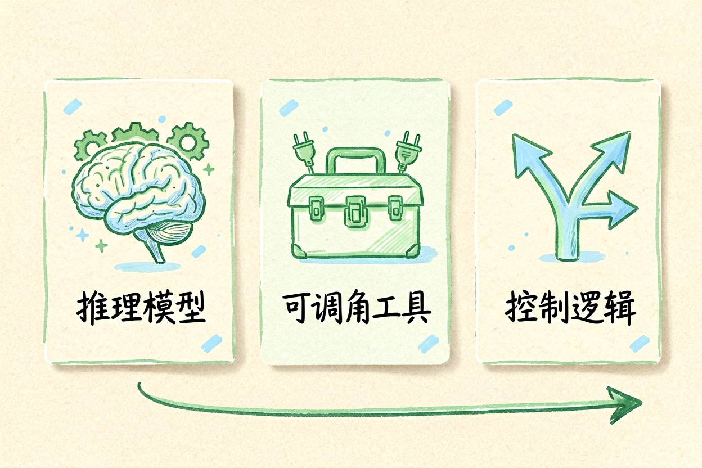
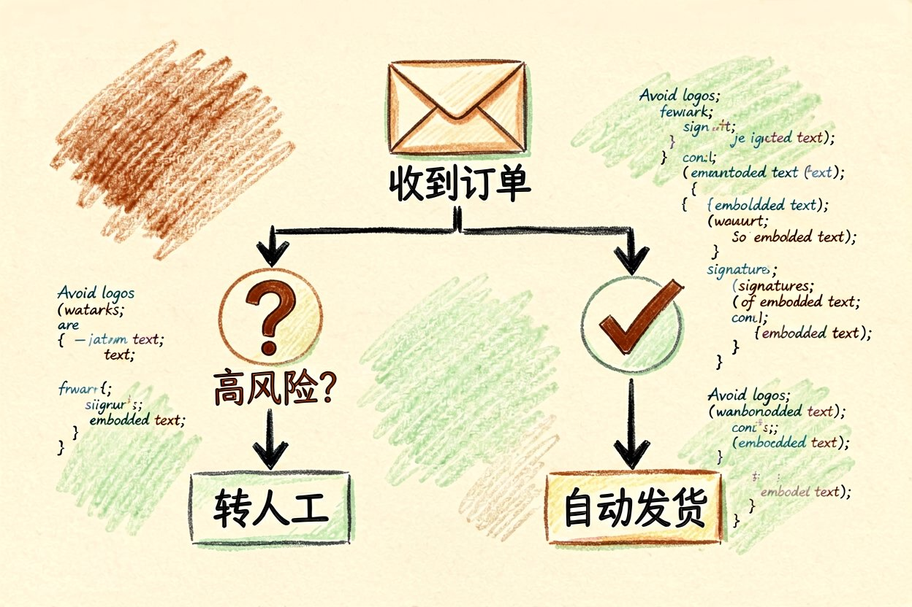
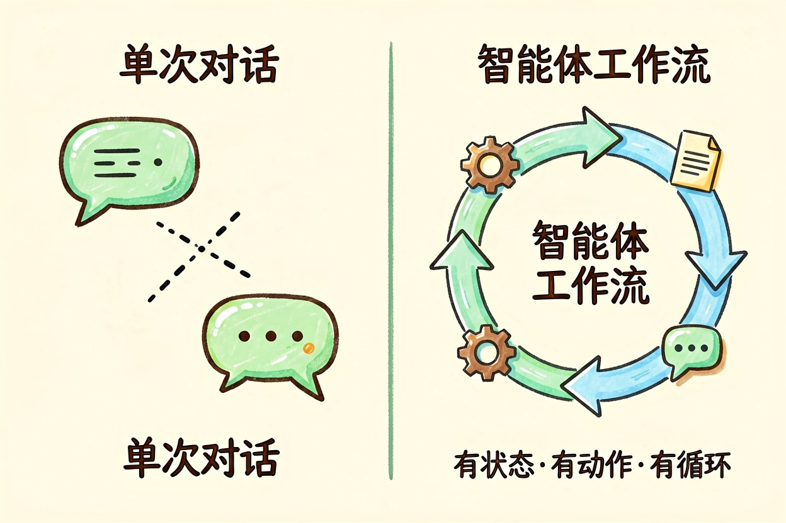
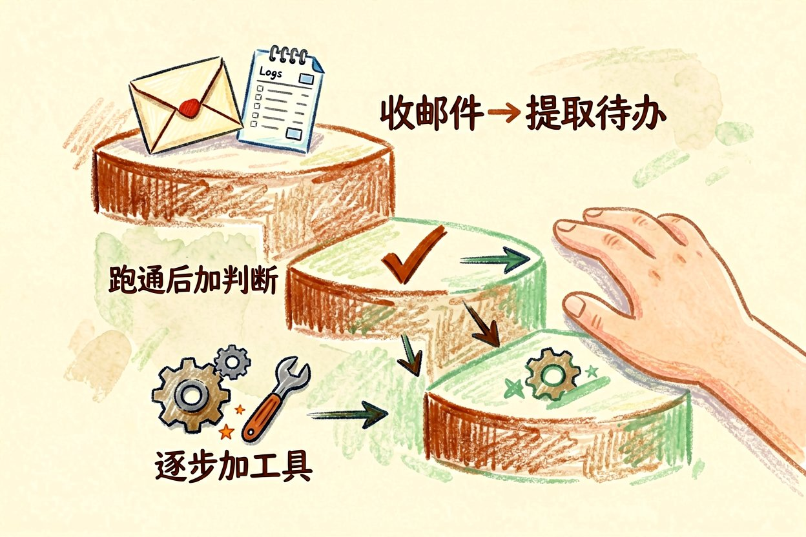
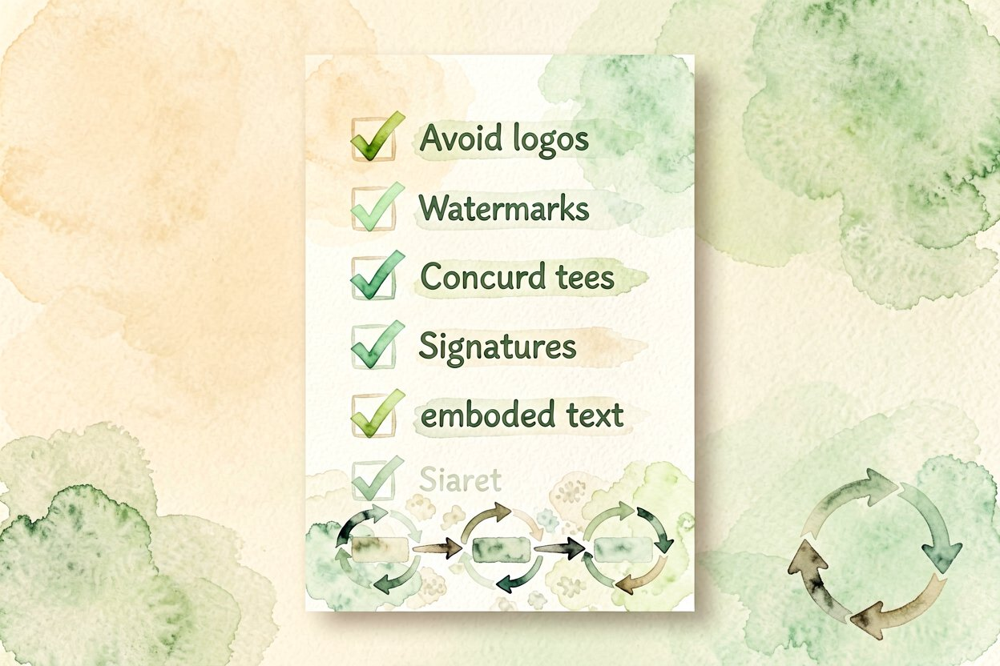

AI 智能体工作流：让 AI 替你跑完一整条流程
想让 AI 不只会回答问题，而是自己把一整件事从头跑到尾？智能体工作流就是做这个的。
AI智能体工作流的本质，是把一个模糊目标拆成一串可执行的步骤，让模型按序调用工具、判断中间结果、再决定下一步动作。它比单次问答更接近"助手"：你给目标，它自己把流程跑完，中间还能根据返回调整路线。很多团队先用它处理售前答疑、工单分流这类重复活，效果立竿见影，因为步骤固定、又能接外部系统。
什么是 AI智能体工作流

AI智能体工作流由三个部分拼起来：一个会推理的模型、一批可调用工具（查资料、发请求、算数）、以及一条控制逻辑。控制逻辑决定"下一步做什么"，可以是一条固定流程，也可以让模型自己判断。和写死脚本不同，智能体在面对意外结果时会重新规划，而不是卡死。它适合目标清楚、但中间步骤多、需要反复调用外部能力的任务，比如"收集本周数据、比对异常、生成日报"这种跨系统的活。
一个能落地的订单处理例子

下面这段伪代码展示了一条最小工作流：收到订单后先判断是否高风险，再决定走人工还是自动。真实业务里，判断前还要拉用户历史、核对库存，把这些也包成工具即可。
def handle_order(order):
risk = model.judge("这笔订单是否高风险？" + order.text)
if risk == "高":
return "转人工审核"
else:
pay(order)
return "已自动发货"把判断交给模型，流程本身保持简单，是新手最稳的起步方式。等跑顺了，再让模型决定调用哪些工具，而不是你写死顺序，灵活度会高很多。
工作流和单次对话差在哪

单次对话是"你问一句我答一句"，上下文随窗口走。AI智能体工作流多了"状态"和"动作"：它会记住上一步的结果，调用外部工具改变现实世界（发消息、写文件），并循环执行直到目标达成。这正是它能替你跑完整件事的原因。代价是调试更麻烦，因为每一步都可能调用真实接口，出错要能回滚，不能像聊天那样随手重说一句。
新手常踩的三个坑
第一，把关键判断全交给模型，出错难追溯。第二，工具权限开太大，模型可能误删数据。第三，没有兜底分支，遇到异常就无限循环。先把范围收紧，再慢慢放开，比一开始追求全自动更稳。建议给每条工作流加一个"超时转人工"的保险，避免半夜卡死没人管，小错酿成大事故。
怎么开始搭第一条工作流

从一条两到三步的小流程入手，比如"收到邮件、提取待办、写进清单"。确认跑通后，再逐步加判断和工具。别一上来就把重要决定全交出去，AI智能体工作流只是帮你省掉重复劳动，关键节点仍要人来把关。

本文信息核对于 2026-08-31。AI 产品的价格、免费额度与功能变动频繁，实际以各工具官网当前说明为准。